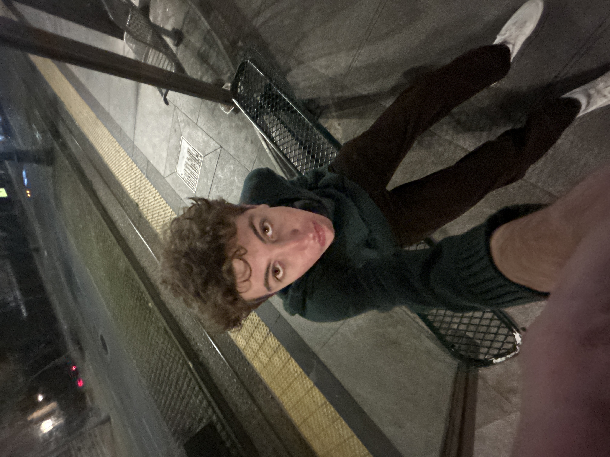
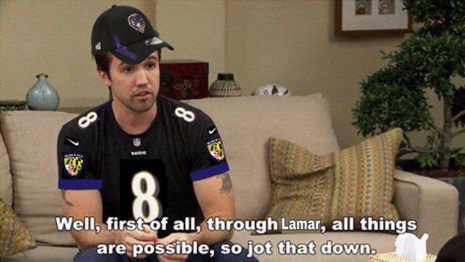

Hi, I'm John! I'm 19 years old and a passionate student at Northwestern University. My academic journey is filled with curiosity and a drive to understand the world around me. Currently, I'm on a unique bay area immersion program, exploring the vibrant tech and startup ecosystem with a diverse cohort of 25 other students. This experience is not just about learning; it's about immersing myself in new cultures, ideas, and ways of thinking. When I'm not hitting the books, you can find me playing intramural sports, exploring local cafes, or volunteering at community events.
As a die-hard football fan, my allegiance lies firmly with the Baltimore Ravens. Their dynamic play, team spirit, and resilience on the field are what draw me to them. From the legendary performances of players like Ray Lewis to the current roster's talent, the Ravens represent more than just a team; they symbolize a relentless pursuit of excellence. Watching their games is not just a pastime; it's an exhilarating experience that brings together fans from all walks of life.
San Francisco has been an incredible adventure. From the iconic Golden Gate Bridge to the historic streets of Chinatown, every moment here has been a discovery. One of my favorite experiences was jogging through the scenic trails of Golden Gate Park, where the city's natural beauty and bustling urban life merge. Sampling the diverse culinary delights, from authentic sourdough bread to the freshest seafood at Fisherman's Wharf, has been a journey for my taste buds. And let's not forget the tech tours - visiting the headquarters of world-leading tech companies was a surreal experience that has inspired my aspirations in the tech field.